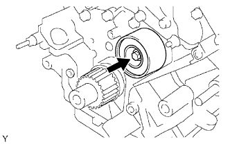
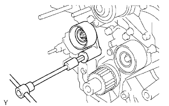

TIMING BELT > INSTALLATION |
| 1. INSTALL NO. 2 TIMING BELT IDLER SUB-ASSEMBLY |
 |
Install the timing belt idler with the bolt.
| 2. INSTALL NO. 1 TIMING BELT IDLER SUB-ASSEMBLY |
 |
When reusing the timing belt idler shaft, apply adhesive to 2 or 3 of the threads.
Using a 10 mm hexagon wrench, install the plate washer and timing belt idler with the idler shaft.
| 3. INSTALL TIMING BELT |
 |
Set the No. 1 cylinder to TDC/compression.
Turn the hexagonal portion of the camshaft to align the timing marks of the camshaft timing pulleys and timing belt plates.
 |
Using the pulley bolt, turn the crankshaft to align the timing marks of the crankshaft timing pulley and oil pump body.
 |
Install the timing belt.
Remove any oil or water from each pulley, and keep them clean.
Face the front mark (arrow) on the timing belt forward.
Align the timing marks on the timing belt and crankshaft timing pulley, and the timing belt and camshaft timing pulleys, and install the timing belt.
 |
Install the belt tensioner.
Remove the dust seal from the belt tensioner.
Using a press, slowly press in the push rod using a force of 981 to 9807 N (100 to 1000 kgf, 220.5 to 2204.7 lbf).
Align the holes of the push rod and housing, and pass a 1.5 mm hexagon wrench through the holes to keep the setting position of the push rod.
Release the press.
Install the dust seal to the belt tensioner.
 |
Temporarily install the belt tensioner with the 2 bolts.
Tighten the 2 bolts.
Using pliers, remove the 1.5 mm hexagon wrench from the timing belt tensioner.
| 4. CHECK NO. 1 CYLINDER TO TDC/COMPRESSION |
 |
Using the pulley bolt, slowly turn the crankshaft timing pulley 2 revolutions from the TDC to TDC.
Check that each pulley is aligned with each timing mark as shown in the illustration.
If the timing marks are not aligned, remove the timing belt and reinstall it.
Remove the pulley bolt.
| 5. INSTALL NO. 1 CRANKSHAFT POSITION SENSOR PLATE |
 |
Install the sensor plate as shown in the illustration.
| 6. INSTALL TIMING BELT COVER SPACER |
 |
Install the cover spacer and gasket.
| 7. INSTALL NO. 1 TIMING BELT COVER |
 |
Install the timing belt cover with the 4 bolts.
| 8. INSTALL CRANKSHAFT DAMPER SUB-ASSEMBLY |
Align the pulley set key with the key groove of the crankshaft damper.
 |
Using SST, hold the crankshaft pulley and install the pulley bolt.
| 9. INSTALL FAN BRACKET SUB-ASSEMBLY |
 |
Install the fan bracket with the 2 bolts and 2 nuts.
| 10. INSTALL V-RIBBED BELT TENSIONER ASSEMBLY |
 |
Install the belt tensioner with the bolt and 2 nuts.
| 11. INSTALL NO. 2 TIMING BELT COVER SUB-ASSEMBLY |
 |
Install the timing belt cover and fit the 2 claws into each part.
Install the 2 bolts.
| 12. INSTALL NO. 3 TIMING BELT COVER SUB-ASSEMBLY RH |
 |
Install the timing belt cover with the 3 bolts and nut.
| 13. INSTALL NO. 3 TIMING BELT COVER SUB-ASSEMBLY LH |
 |
Pass the camshaft position sensor wire through the cover hole.
Install the timing belt cover with the 4 bolts.
Install the wire grommet to the timing belt cover.
Connect the sensor connector.
Install the sensor wire to the 2 wire clamps on the cover.
 |
Connect the engine wire to the 3 wire clamps.
Connect the camshaft timing oil control valve connector and control motor connector.
| 14. INSTALL NO. 2 IDLER PULLEY SUB-ASSEMBLY |
 |
Install the idler pulley and cover plate with the bolt.
| 15. INSTALL OIL COOLER PIPE |
 |
Using needle-nose pliers, grip the claws of the clamps and slide the clamps to connect the 3 water by-pass hoses.
Install the oil cooler pipe with the cap nut and bolt.
| 16. INSTALL GENERATOR ASSEMBLY |
 |
Install the generator with the bolt and 2 nuts.
 |
Connect the generator connector.
Connect the generator wire with the nut.
Install the terminal cap.
Connect the harness bracket to the generator with the bolt.
| 17. CONNECT VANE PUMP ASSEMBLY |
 |
Connect the vane pump with the 2 bolts and nut.
 |
Connect the connector.
| 18. CONNECT COOLER COMPRESSOR ASSEMBLY |
 |
Connect the compressor. Then install it and the No. 1 compressor stay with the nut and 3 bolts.
Install the cooler refrigerant suction hose with the bolt.
Connect the connector.
| 19. INSTALL NO. 2 RADIATOR HOSE |
 |
Using needle-nose pliers, grip the claws of the clamps and slide the clamps to install the radiator hose.
| 20. INSTALL FAN SHROUD |
 |
Install the fan pulley to the water pump.
Place the shroud together with the cooling fan between the radiator and engine.
Temporarily install the cooling fan to the water pump with the 4 nuts. Tighten the nuts as much as possible by hand.
 |
Attach the claws of the shroud to the radiator as shown in the illustration.
Install the shroud with the 2 bolts.
Connect the oil cooler tube to the fan shroud with the 2 bolts.
w/ Air Cooled Transmission Oil Cooler:
Pass the hose through the flexible hose clamp and close the clamp as shown in the illustration.
Connect the reservoir hose to the upper side of the radiator tank.
|
Tighten the 4 nuts of the cooling fan.
| 21. INSTALL FAN AND GENERATOR V BELT |
 |
Set the V belt onto every part except the belt tensioner, as shown in the illustration.
Loosen the V belt by turning the belt tensioner counterclockwise.
Set the V belt to the belt tensioner.
 |
Check that the belt fits properly in the ribbed grooves.
 |
Check that the arrow on the belt tensioner is within area "A".
If the arrow is outside area "A", replace the fan and generator V belt.
| 22. INSTALL NO. 1 RADIATOR HOSE |
 |
Using needle-nose pliers, grip the claws of the clamps and slide the clamps to install the radiator hose.
| 23. INSTALL AIR CLEANER HOSE ASSEMBLY |
 |
Install the air cleaner hose so that the protrusion of the air cleaner cap aligns with the groove of the hose as shown in the illustration.
Tighten the 2 clamps.
Connect the vacuum transmitting hose.
Connect the No. 2 ventilation hose.
| 24. CONNECT CABLE TO NEGATIVE BATTERY TERMINAL |
| 25. ADD ENGINE COOLANT |
Add engine coolant.
| Item | Specified Condition | |
| w/o Transmission oil cooler | w/o Rear Heater | 13.4 liters (14.2 US qts, 11.8 Imp. qts) |
| w/ Rear Heater | 16.3 liters (17.2 US qts, 14.3 Imp. qts) | |
| w/ Transmission oil cooler | w/o Rear Heater | 14.1 liters (14.9 US qts, 12.4 Imp. qts) |
| w/ Rear Heater | 16.9 liters (17.9 US qts, 14.9 Imp. qts) | |
 |
Slowly pour coolant into the radiator reservoir until it reaches the F line.
Install the radiator reservoir cap.
Press the inlet and outlet radiator hoses several times by hand, and then check the coolant level. If the coolant level is low, add coolant.
Install the radiator cap.
Start the engine and warm it up until the thermostat opens.
Maintain the engine speed at 2000 to 2500 rpm.
Press the inlet and outlet radiator hoses several times by hand to bleed air.
Stop the engine, and wait until the engine coolant cools down to the ambient temperature.
 |
Check that the coolant level is between the F and L lines. If the coolant level is below the L line, repeat all of the procedures above. If the coolant level is above the F line, drain coolant so that the coolant level is between the F and L lines.
| 26. INSPECT FOR COOLANT LEAK |
 |
Fill the radiator with coolant and attach a radiator cap tester.
Warm up the engine.
Using the radiator cap tester, increase the pressure inside the radiator to 123 kPa (1.3 kgf/cm2, 18 psi), and check that the pressure does not drop.
If the pressure drops, check the hoses, radiator and water pump for leaks. If no external leaks are found, check the heater core, cylinder block and head.
| 27. INSPECT IGNITION TIMING |
Warm up and stop the engine.
Allow the engine to warm up to a normal operating temperature.
When using the intelligent tester:
Connect the intelligent tester to the DLC3.
Start the engine and idle it.
Push the intelligent tester main switch ON.
Enter the following menus: Powertrain / Engine and ECT / Data List / Primary / IGN Advance.
Disconnect the intelligent tester from the DLC3.
 |
When not using the intelligent tester:
Remove the 2 nuts and V-bank cover.
Connect the tester probe of a timing light to the wire of the ignition coil connector for the No. 1 cylinder.
 |
Using SST, connect terminals 13 (TC) and 4 (CG) of the DLC3.
 |
Using the timing light, check the ignition timing.
Remove SST from the DLC3.
Disconnect the timing light from the engine.
Install the V-bank cover with the 2 nuts.
| 28. INSPECT ENGINE IDLE SPEED |
Warm up and stop the engine.
Allow the engine to warm up to a normal operating temperature.
When using the intelligent tester:
Connect the intelligent tester to the DLC3.
Race the engine at 2500 rpm for approximately 90 seconds.
Push the intelligent tester main switch ON.
Enter the following menus: Powertrain / Engine and ECT / Data List / Primary / Engine Speed.
Disconnect the intelligent tester from the DLC3.
 |
When not using the intelligent tester:
Using SST, connect a tachometer probe to terminal 9 (TAC) of the DLC3.
Race the engine at 2500 rpm for approximately 90 seconds.
Check the idle speed.
Disconnect the tachometer from the DLC3.
| 29. INSTALL V-BANK COVER SUB-ASSEMBLY |
 |
Attach the 2 V-bank cover hooks to the bracket.
Install the V-bank cover with the 2 nuts.
| 30. INSTALL FRONT FENDER APRON SEAL LH |
 |
Install the fender apron seal with the 4 clips.
| 31. INSTALL FRONT FENDER APRON SEAL LH (w/ KDSS) |
 |
Install the fender apron seal with the 3 clips.
| 32. INSTALL FRONT FENDER APRON SEAL FRONT RH |
 |
Install the fender apron seal with the 3 clips.
| 33. INSTALL NO. 1 ENGINE UNDER COVER SUB-ASSEMBLY |
 |
Install the No. 1 engine under cover with the 10 bolts.
| 34. INSTALL FRONT FENDER SPLASH SHIELD SUB-ASSEMBLY LH |
 |
Push in the clip indicated by the arrow in the illustration to install the fender splash shield.
Install the 3 bolts and screw.
| 35. INSTALL FRONT FENDER SPLASH SHIELD SUB-ASSEMBLY RH |
| 36. INSPECT ENGINE COOLANT LEVEL |
 |
Check that the engine coolant level is between the L and F lines when the engine is cold.
If the engine coolant is low, check for leaks and add "TOYOTA Super Long Life Coolant" or similar high quality ethylene glycol based non-silicate, non-amine, non-nitrite and non-borate coolant with long-life hybrid organic acid technology to the F line.
Remove the radiator cap, and check that the coolant level is up to the radiator filler hole.